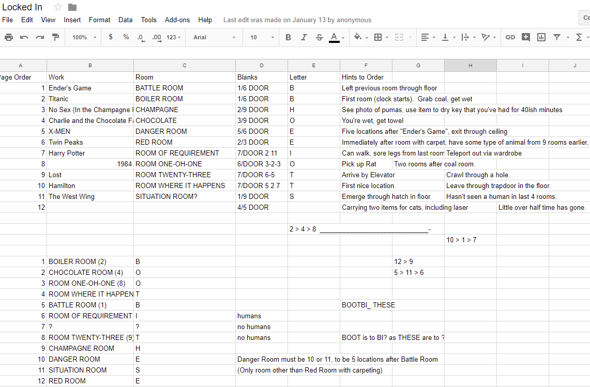

This puzzle gives a detailed walkthrough of a particularly elaborate escape room. Every paragraph is full of very specific details, and is followed by a series of blanks that includes a little door icon and one blank highlighted with a red border, and at the end there appears to be an SAT-style analogy with 12 blanks. (Apologies to any readers too young to remember when the SAT test had an analogies section.) Reading the paragraphs carefully, two things might stand out:
Putting these together, one thing to try would be to put the paragraphs into chronological order and use the letters that fall in the highlighted squares to fill in the analogy. Doing so gives the message "BOOT : BIT :: THESE : ?" The first half suggests to replace a double-O with an I; for the second half, the important thing is that these were all ROOMS (and this was emphasized by the special character in the blanks). Combining those gives the final answer RIMS.
Note that it's not necessary to identify all the rooms to read this message. Looking at my solving team's spreadsheet, we never figured out what the last paragraph was, but we were able to guess what the intended analogy was.
